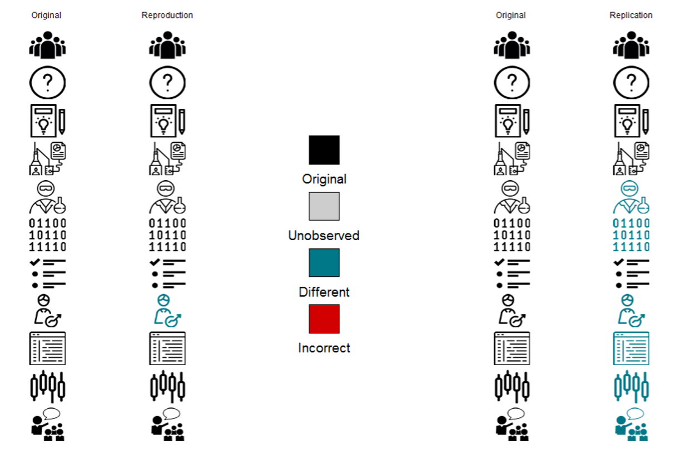
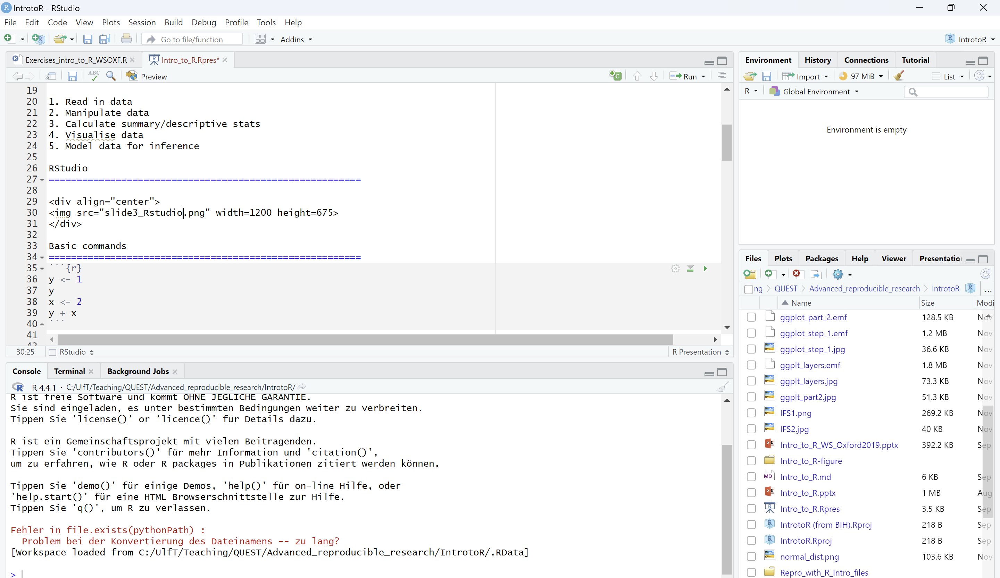
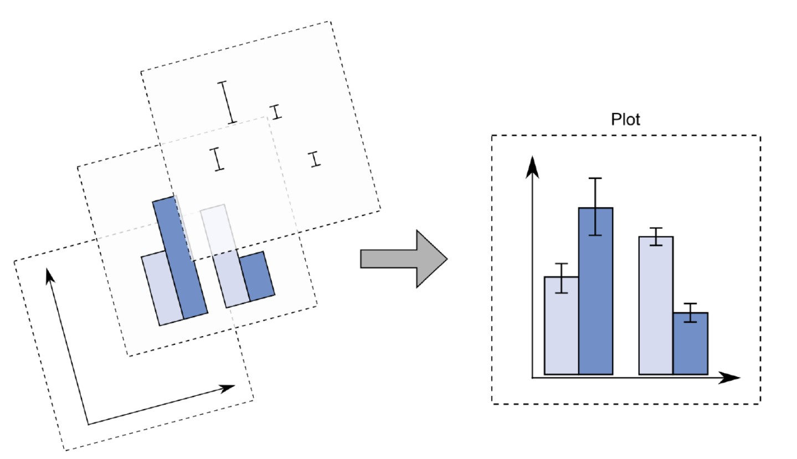
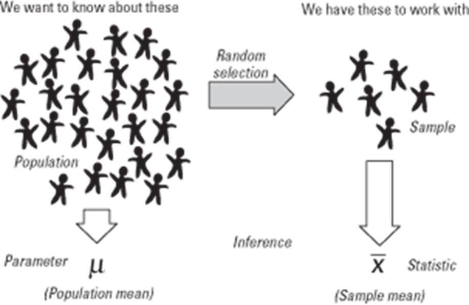
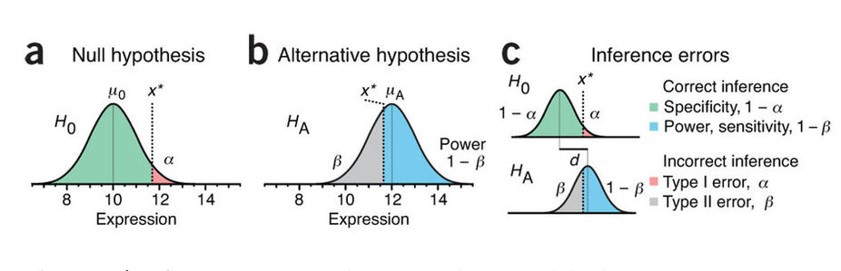

[1] 1[1] 3

[1] -0.89446715 -0.00140642 -0.04333492 -0.84907410 -0.92005967 -1.13262882[1] -0.6401618Instructions:
In R you first need to install additional packages. This is done only once!
Before you can use it it needs to be loaded into memory. You need to do this each time you start R!
| SUBJECT_ID | AGE | SEX | HEAD_SIZE | BRAIN_VOLUME |
|---|---|---|---|---|
| SUBJECT_0001 | 26 | F | 57.17709 | 1276.014 |
| SUBJECT_0002 | 35 | F | 58.73956 | 1265.146 |
| SUBJECT_0003 | 26 | F | 51.84828 | 1206.201 |
| SUBJECT_0004 | 50 | F | 49.90514 | 1045.086 |
| SUBJECT_0005 | 54 | F | 49.85881 | 1055.700 |
| SUBJECT_0006 | 29 | F | 46.27140 | 1068.958 |
[1] "SUBJECT_0001" SUBJECT_ID AGE SEX HEAD_SIZE BRAIN_VOLUME
1 SUBJECT_0001 26 F 57.17709 1276.014 [1] 1276.014 1265.146 1206.201 1045.086 1055.700 1068.958 1169.424 1221.669
[9] 1085.964 1069.846 1092.817 1241.238 997.838 1123.477 1160.160 1055.188
[17] 1184.618 1144.757 1123.463 1180.263 1086.339 941.225 1235.858 1081.646
[25] 1093.055 1051.657 1164.911 1018.620 1202.222 1247.253 1002.684 1126.900
[33] 1056.812 1266.071 1068.944 1315.824 1014.273 1241.202 1248.163 1179.447
[41] 1162.312 1127.434 1335.848 1074.468 1150.462 1250.394 1171.259 1093.647
[49] 1160.543 1266.482 1267.970 1132.691 1297.872 1422.081 1305.888 1214.765
[57] 1380.445 1198.576 1327.818 1441.614 1220.253 1465.790 1331.255 1208.895
[65] 1081.747 1335.970 1359.374 1344.722 1266.475 1121.419 1454.352 1249.571
[73] 1502.971 1224.499 1048.783 1272.916 1486.442 1434.046 1327.623 1393.450
[81] 1171.085 1131.550 1225.893 1328.475 1215.184 1320.070 1300.768 1182.141
[89] 1358.096 1273.566 1447.153 1406.895 1221.192 1185.087 1322.756 1327.486
[97] 1355.366 1129.832 1286.297 1337.046Mean
\[ \mu=\frac{\sum_{i=1}^{n} x_i}{n} \]
Standard Deviation
\[ SD=\sqrt{\frac{\sum_{i=1}^{n}{(x_i-\mu)}^2} {n-1}} \]




https://rpsychologist.com/pvalue/
Krzywinski, M., & Altman, N. (2013). Power and sample size. Nature Methods, 10, 1139.
\[ t=\frac{X^*-\mu_0}{s_x} \]
https://rpsychologist.com/d3/tdist/
Welch Two Sample t-test
data: my_data$BRAIN_VOLUME by my_data$SEX
t = -7.4155, df = 95.055, p-value = 5.016e-11
alternative hypothesis: true difference in means between group F and group M is not equal to 0
95 percent confidence interval:
-188.6977 -108.9994
sample estimates:
mean in group F mean in group M
1144.076 1292.924 \[ Y= E[Y]+\epsilon \] \[ E[Y]=\beta X \] \[ \epsilon \sim N(0,sd) \]
Y depends on X. Is X factorial or continuous?
If factorial: linear model = t-test
If continuous: linear model = regression
Function in R: lm()
http://rpsychologist.com/d3/correlation/
Call:
lm(formula = BRAIN_VOLUME ~ HEAD_SIZE, data = my_data)
Residuals:
Min 1Q Median 3Q Max
-122.47 -47.32 3.20 32.48 155.24
Coefficients:
Estimate Std. Error t value Pr(>|t|)
(Intercept) 319.4438 48.0585 6.647 1.7e-09 ***
HEAD_SIZE 15.5977 0.8276 18.847 < 2e-16 ***
---
Signif. codes: 0 '***' 0.001 '**' 0.01 '*' 0.05 '.' 0.1 ' ' 1
Residual standard error: 58.31 on 98 degrees of freedom
Multiple R-squared: 0.7838, Adjusted R-squared: 0.7816
F-statistic: 355.2 on 1 and 98 DF, p-value: < 2.2e-16
Call:
lm(formula = BRAIN_VOLUME ~ SEX + HEAD_SIZE, data = my_data)
Residuals:
Min 1Q Median 3Q Max
-123.063 -47.189 2.854 32.399 155.378
Coefficients:
Estimate Std. Error t value Pr(>|t|)
(Intercept) 322.842 60.095 5.372 5.34e-07 ***
SEXM 1.507 15.857 0.095 0.924
HEAD_SIZE 15.526 1.125 13.798 < 2e-16 ***
---
Signif. codes: 0 '***' 0.001 '**' 0.01 '*' 0.05 '.' 0.1 ' ' 1
Residual standard error: 58.61 on 97 degrees of freedom
Multiple R-squared: 0.7838, Adjusted R-squared: 0.7793
F-statistic: 175.8 on 2 and 97 DF, p-value: < 2.2e-16The “DRY” Principle
One of the golden rules of programming is Don’t Repeat Yourself. If you find yourself copying and pasting the same code block more than twice, it’s time to write a function.
Modularity & Logic
Functions allow you to break down complex problems into manageable pieces. By encapsulating logic, you make your scripts easier to test, debug, and understand.
An R function is defined using the function() directive and stored as an object.
Use Descriptive Names
One task only
Documentation
Two Key environments are:
The current environment, or current_env() is the environment in which your function or code is currently executing.
The global environment, or global_env(), sometimes called your “workspace”, is where all interactive (i.e., outside of a function) computation takes place.
Environment and Functions
If you call a function, R creates a new environment.This is nested within the Global Environment. At the end of the function call this environment is destroyed along with all of the variables in it. The variable of the last executed line is usually returned.
Open 01_Functions/01_exercise_functions.R and work through the exercise
Vectorisation is the practice of applying operations to entire arrays (vectors) at once, rather than looping through individual elements.
Performance: R is an interpreted language. Explicit for loops carry significant overhead. Vectorised functions push the looping down to optimized C or Fortran code.
Readability: Vectorised code is often more concise, looking more like the mathematical equation it represents.
Maintainability: Fewer lines of code generally lead to fewer bugs.
The inefficient way
Suppose we want to square every number in a list. In many languages, you might write a loop:
The R way
In R, arithmetic operators are already vectorised. We can apply the operation to the entire object directly.
[1] 1 4 9 16 25Note
Notice there is no for loop, no index variable i, and no need to pre-allocate the result vector.
Avoid loops for element-wise arithmetic (addition, multiplication, logical checks).
Think in vectors: Treat data columns as single units.
Benefit: Your code runs faster and is easier for others to read.
“Vectorisation is not just about speed; it’s about speaking the language of data.”
Open 02_Vectorisation/02_exercise_vectorization.R and work through the exercise